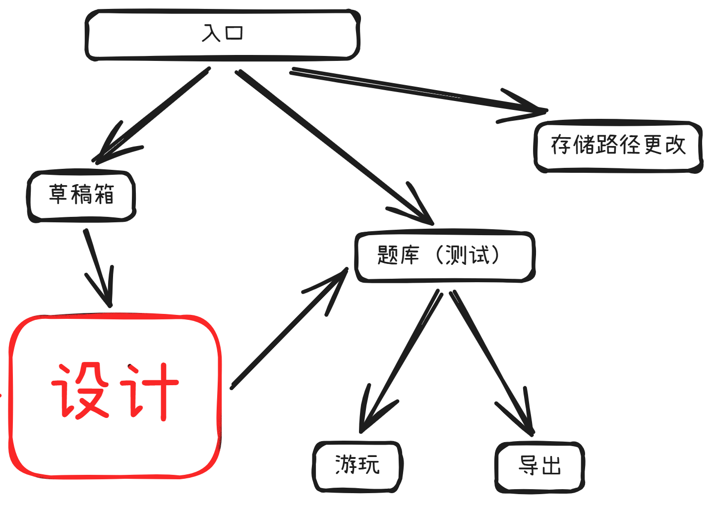
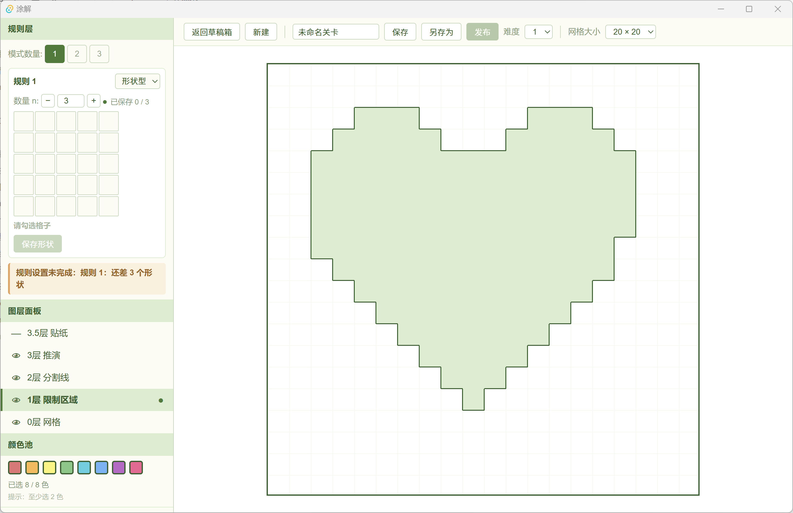
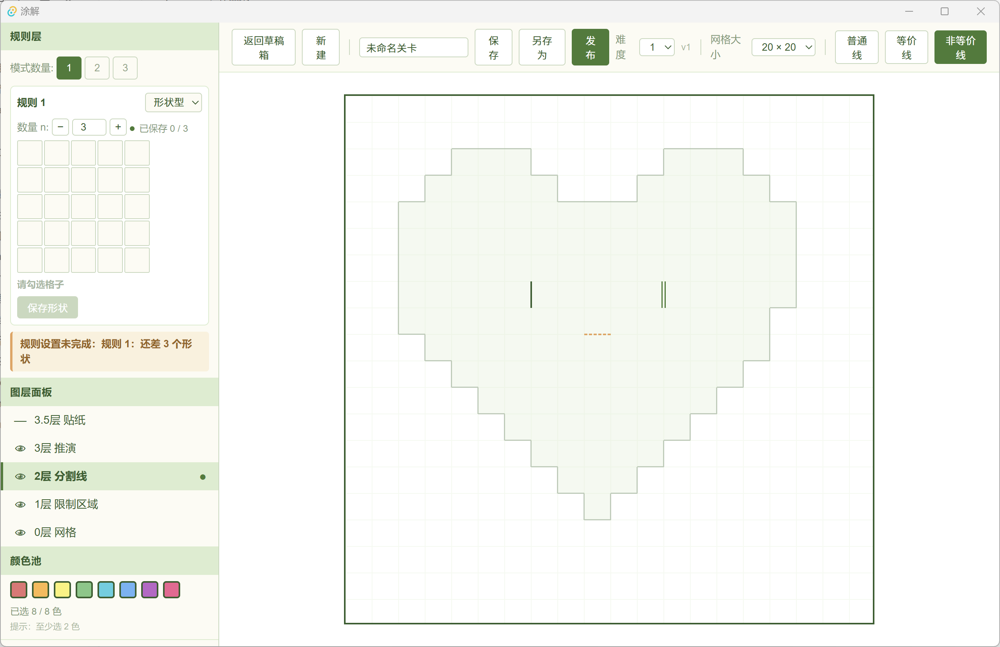
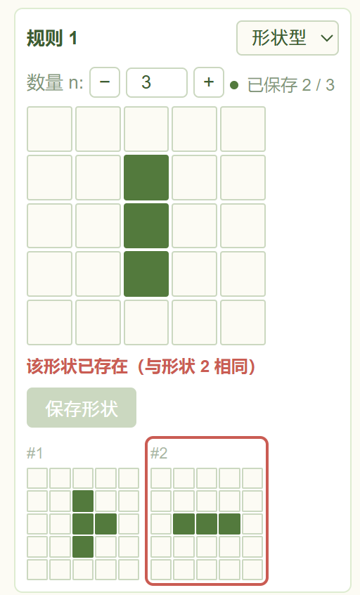
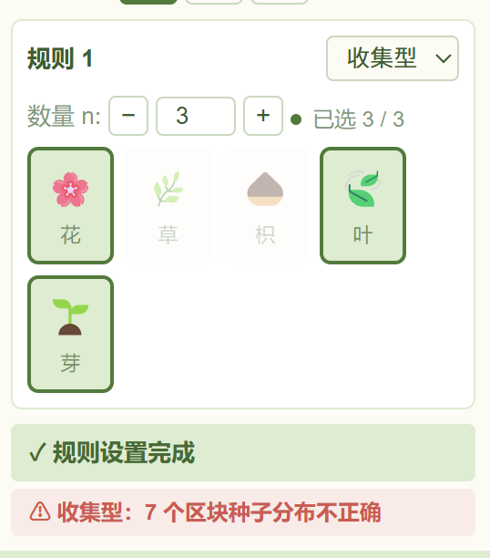
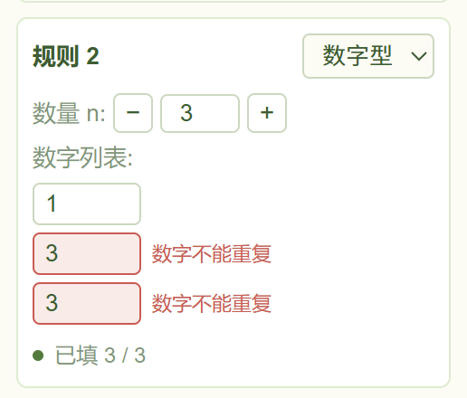

一个谜题设计工具的诞生
本人深深沉迷于《格利米斯工匠》，在还没有玩完所有关卡时，就为关卡的有限感到无法遏制的哀伤，本着自食其力的心理，想说游戏内的关卡是有限的，如果自己打造，便是无限的，于是变兴致冲冲地开始设计这个工具。
但被热血冲昏头脑地我忽略了俩个致命的问题
1、自己设计的关卡，自己知道答案所以无法游玩；
2、《格利米斯工匠》内已经内置了创意工坊地功能，而我沉迷游玩完全没有注意到，并且第一个问题已经被第二个问题解决，玩家间互相分享设计的谜题，谜题便无穷无尽了！我原本的设计就像地狱中的长柄勺一样狭隘，但考虑到这个工具很大概率只有我自己使用，只能用于设计谜题分享给我那些并不那么热衷于解密游戏，但会在我期待的眼神和热情的鼓励中赏光的朋友，我的导出设计也并非一无是处，除此之外因为我设计的时候并未体验过创意工坊的功能，所以很多设计逻辑都不同，因为躲开了官方答案所以没有被限制思考，现在我就学到了俩份设计方案了，怎么不算因祸得福，后面会做一点对比分析
最先设计的自然是设计部分，我根据自己的游玩体验，将设计部分分为了0-3.5图层（网格层，地砖层、分割线层、推演层、贴纸层），并设计了可见性和洋葱皮的功能，和绘画软件类似，符合直觉。


- 网格层顾名思义就是网格，方便用户设计时参考区块等组件的位置
- 地砖层：用于铺设谜题所需的地砖（也就是玩家鼠标可操作的空间，后续的分割线、推演以及贴纸都必须发生在地砖层所在）
分割线层：分割线位于地砖内各个格子之间
- 普通线（图中一杠）：线两边的格子不能属于同一区块
- 等价线（图中两杠）：线两边的格子不能属于同一区块，且俩边形状必须相等（允许旋转、镜像）
- 非等价线（图中虚线）：线两边的格子不能属于同一区块，且俩边形状不能相等（包含旋转、镜像）

规则限制（主要发生在推演层，其实分割线也是规则的一部分，但是分割线可以在以下所有类型中出现，所以下文所提的规则都是推演层的可选规则）是这类谜题的核心，在设计之初我设计成由用户从三种规则类型选择其一并填写规则内容

- 形状型：限制单区块形状, 填写N_Shape(限制形状的数量），并在网格中勾选出N_N个不相同（包括镜像旋转）联通图案作为限制形状

- 收集型：限制单区块所必须包含的贴纸， 填写N_Sticker(限制贴纸的数量），并在网格中勾选出N_N个贴纸作为限制图案

- 数字型：限制单区块格子数， 填写N_Num(限制数的数量），并填写N_N个数字作为限制数
后续又增加了规则组合，也就是在设计初可以选择要使用的规则数，然后选择要使用的规则，再按规则填写内容，但实际上形状型限制形状的同时就已经限制了数字，所以这个功能主要是支持收集型和其他类型组合，和为后续可能提供的其他规则类型提供更多可能
存储路径更改，很有必要，因为c盘很宝贵
然后导出功能也是比较重要的，因为我的朋友们都不是学计算机的，对解密也没有很高的兴趣，所以我需要的导出功能必须足够轻量，采用的是提前编译好的播放器＋关卡数据，exe点开即玩，这里还有一个小小的取舍，一开始设计的时候是有测试模式和发布功能的，但这是思维定势，实际上作为一个本地工具，题库就是测试区域，导出才是对标正常联网产品的发布功能。
在做作品集的时候想到，导出实际上也可以导出为可嵌合进网页的html，于是便加入了这个功能，实际上和exe有点重叠了毕竟都是轻量导出，对玩家来说区别不大，但是这样大家就可以在作品集里体验了，我放入了俩个小关卡，来试试看吧！
加入了手机端的适配（推荐使用电脑端游玩），电脑端左键点击是添加，右键点击是删除，手机端将删除键独立出来类似于橡皮擦
写好prd后让agent产出html原型图，预防表述有歧义的部分，确认agent理解无误后便可以开发了。
最后是和《格利米斯工匠》的创意工坊对答案，没有想到居然有很多值得吐槽的反直觉设计，先讲一下我觉得很值得学习的地方：
1、并没有分图层，而是全部在一个图层上，通过键盘按键区分要安置的组件，感觉虽然有一个查找字典的学习过程，熟悉后还是非常方便的；
2、规则组合也比我的设计自由得多，可以随意添加，不需要选好规则个数。
然后就是我觉得毕竟反直觉的设计，首先就是地砖的铺设和删除居然都是右键，这和游戏内的设计（左键添加右键删除）完全不同，导致我刚上手的时候左键点了半天，我觉得同一个产品内，操作应该有一致性，避免这种情况。
还有就是限制形状的设计，没有连通性检测，非常古怪，这样的话很难区分是否属于同一区块，而且又存在一个形状可能是另一个形状的子集的情况，完全没法区分，添加形状设计的时候也非常反直觉，不是勾选好一个形状就保存然后刷新画布，而是勾选形状后在规则中选择添加形状，然后！！注意要手动删除画布中的形状再添加，否则下次添加时就会出现重复
另外还有bug，进入测试模式再返回后，会把测试模式的报错带回来，需要手动解除
游戏内截图因为版权原因无法上传GitHub page
最大的收获：拓宽了设计思路，可以看到官方的设计是以自由度为中心的，而我则不自觉地以“不能出bug”为中心，下意识地增加了很多限制性条件，在自由度上更为欠缺，当然bug也比官方要少（